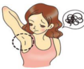

脱毛・エステサロンＱ＆Ａ
-

Q.脱毛をしてからぴりぴりした感じが続くのですが、そういうものなのでしょうか？
A.まずは脱毛をうけた脱毛サロンやクリニックに相談してみて下さい。
脱毛をした後に
・肌が敏感になりぴりぴりとした感じが残る
・ニキビができやすくなる
・肌の張りが前よりも良くない
といった症状がある方は注意してください。ぴりぴり感が残る原因はヤケド・冷却不足など様々なことが考えられます。 肌の張りが良くないのは、脱毛後はいつもより乾燥しやすくなっているので、しっかり保湿をすれば改善されるかと思います。 いずれにしても自己完結するのではなく、脱毛サロンに自分の今の症状をしっかり伝えて、どうすれば良いか対処方法を教えてもらいましょう。